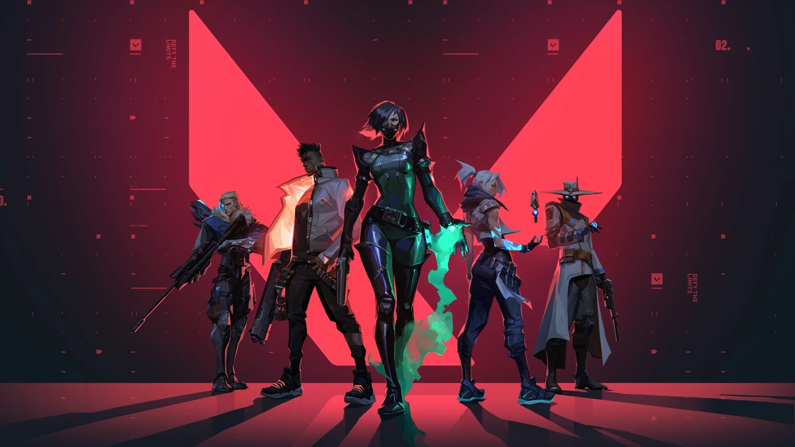
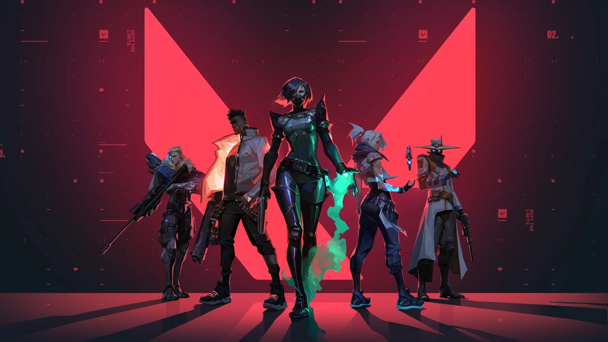
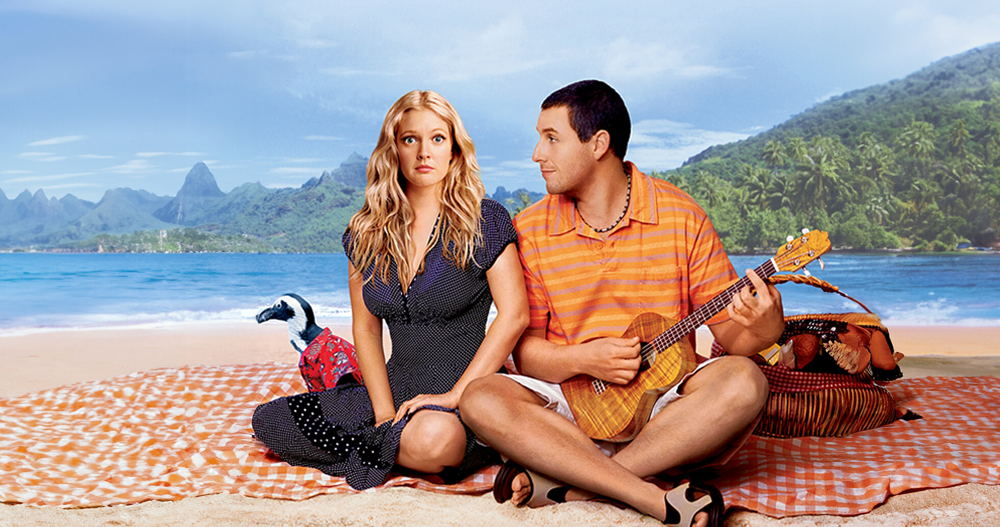
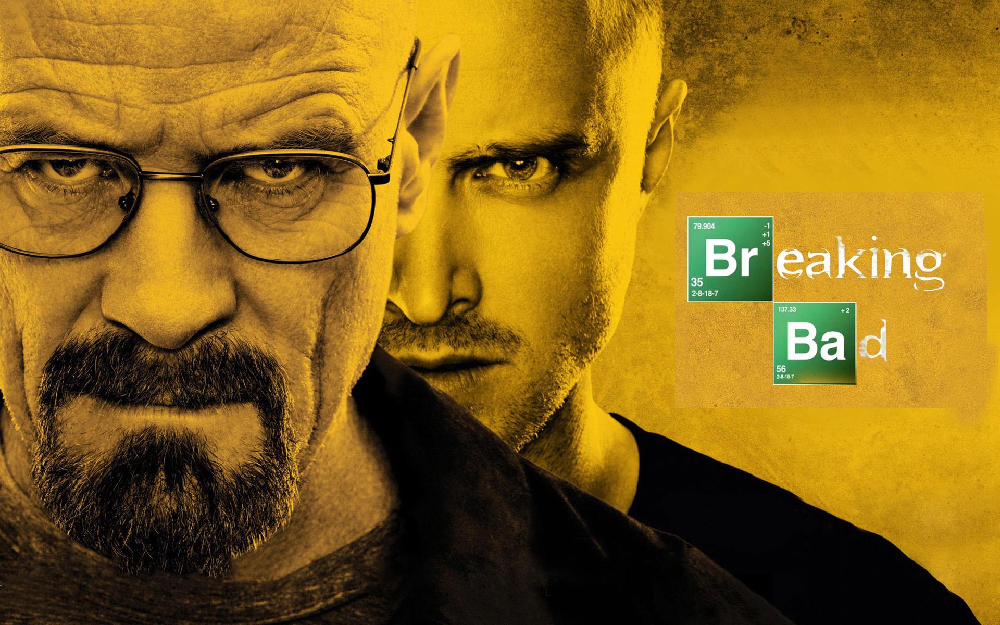
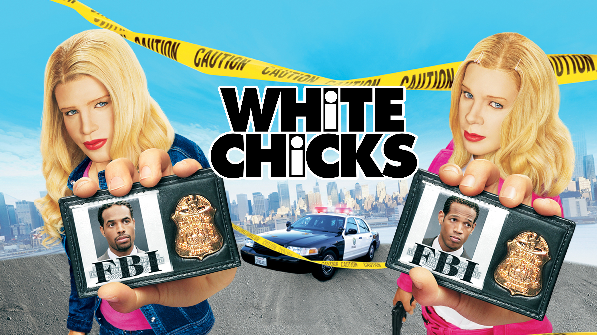
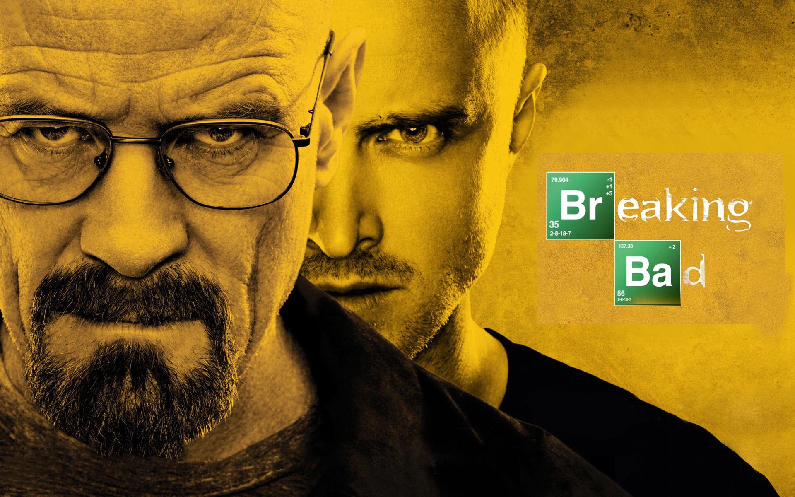
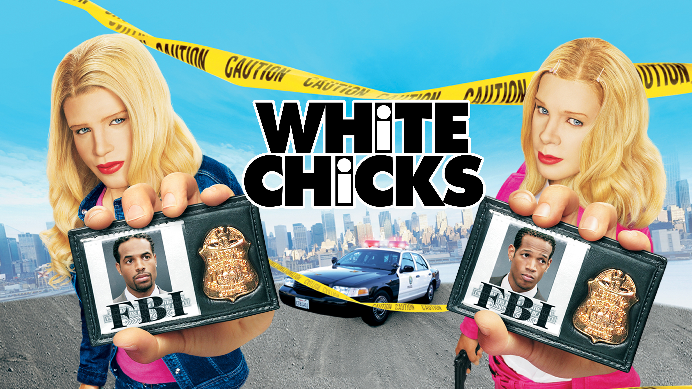
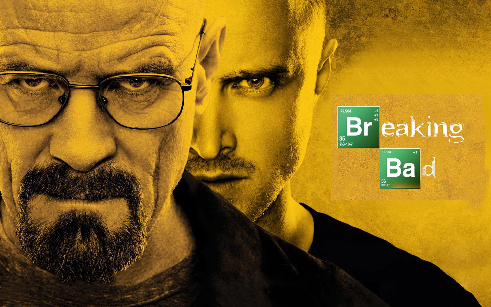
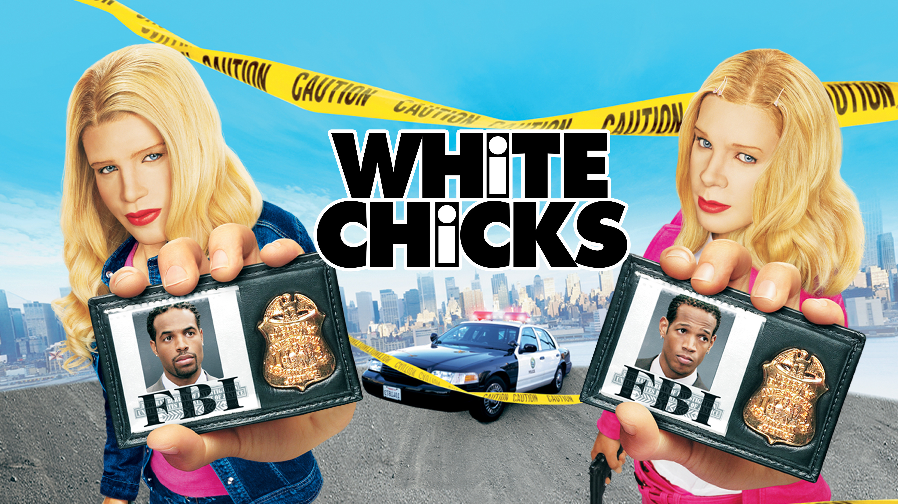

HOBBIES
Discover the activities that fuel my creativity and passion.
🎮 Gaming
I enjoy playing video games in my free time, especially games with immersive storylines and strategic gameplay.


 

🎬 Watching Movies
From sci-fi to thrillers, movies are a great way for me to unwind and spark new ideas.

 





🏀 Playing Basketball
Basketball is my go-to for staying active and enjoying competitive fun.
💪 Working Out
Regular exercise keeps me focused and motivated—it’s essential for both mind and body.